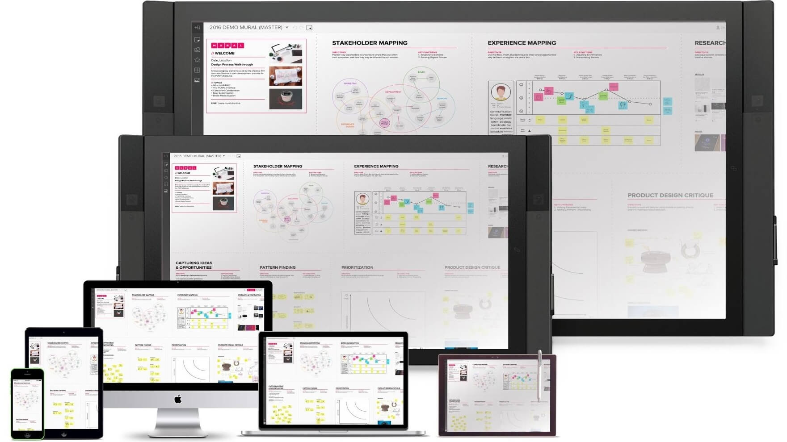
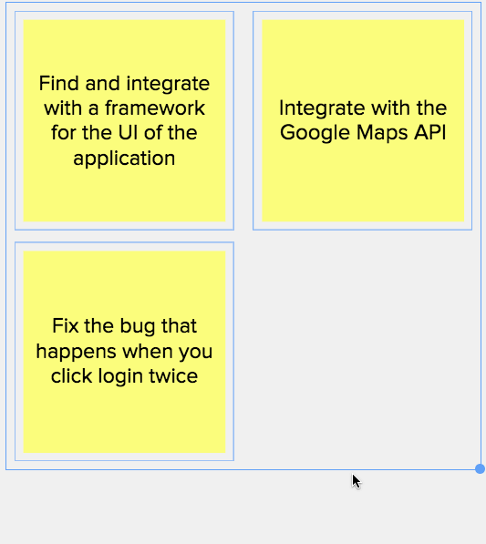
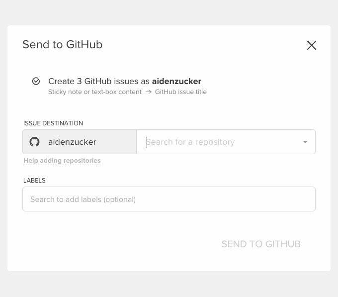
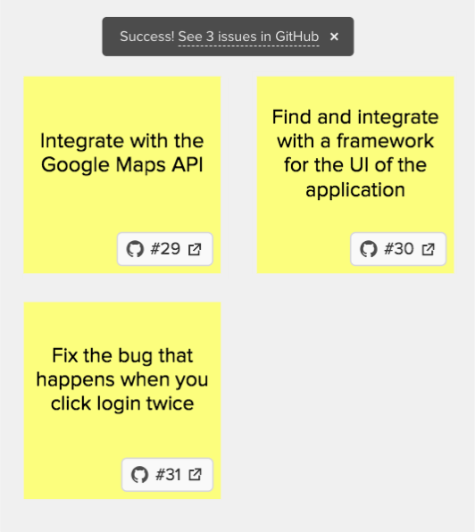
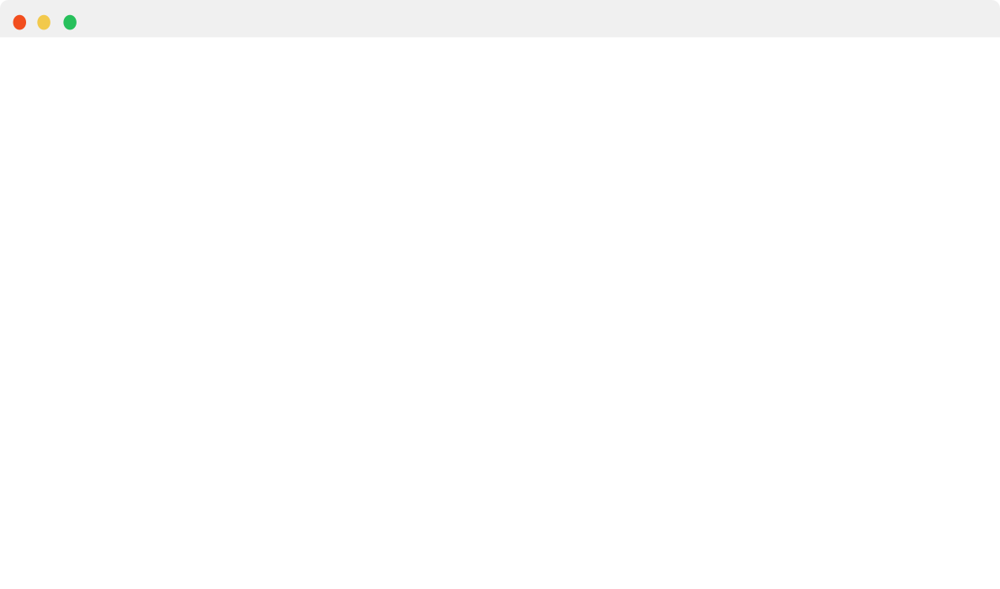
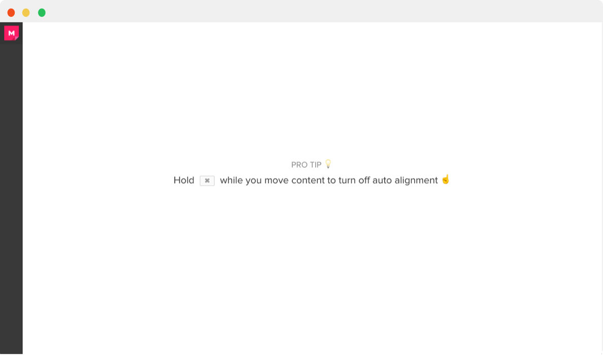
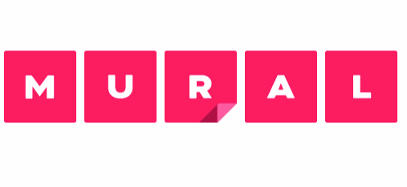
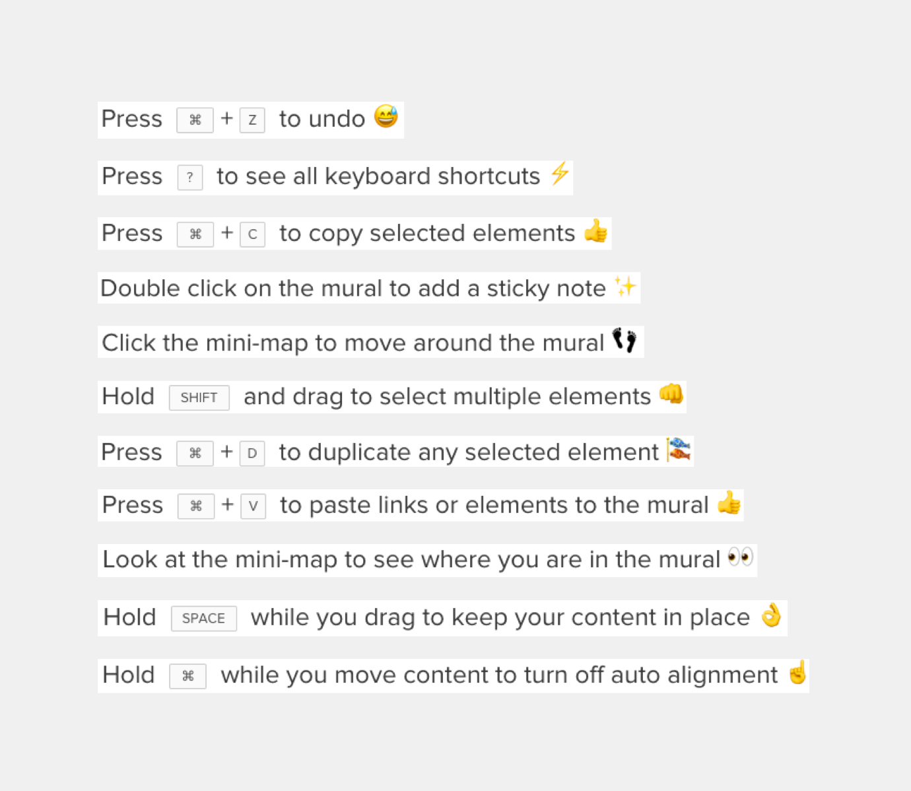
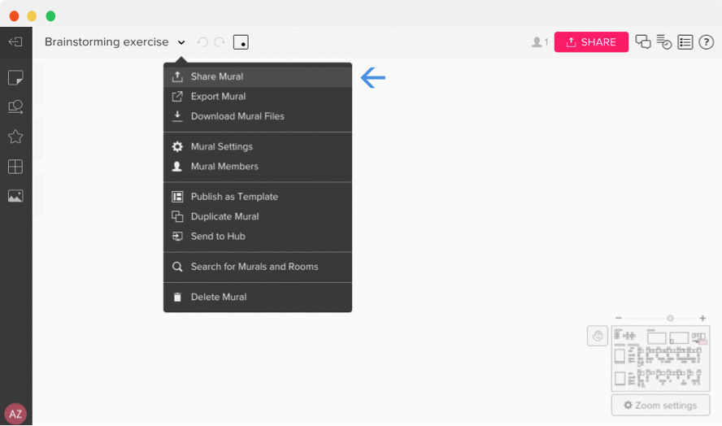
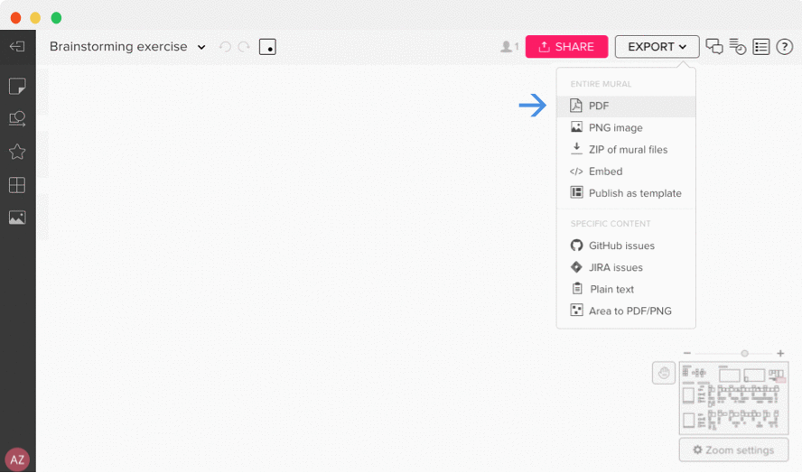

Product and Scale
Murals are online whiteboards where you can collaborate with others in real time, similar to Google Docs. Every month over 65,000 people from companies like IBM, Intuit and IDEO use MURAL to connect their global teams.
Role
I worked for a year as one of five product designers at MURAL. I designed mostly for web but consulted on projects for a variety of devices, from iOS to 84” Microsoft Surface Hubs.
At MURAL, product designers are extremely autonomous and collaborative, so any given week I defined project scope, conducted user interviews, built prototypes, solicited and balanced feedback and wrote documentation.
Case Studies
Process and outcomes for three projects I led
01
GitHub Integration
Problem
Many teams at IBM use MURAL to break projects down into smaller tasks which they put into GitHub for progress tracking. The problem was that engineers were disengaged with the process because it required tedius copy-pasting between MURAL and GitHub.
“I want devs to think ‘Wow, this process is really convenient for building GitHub issues.’ That’s what brings devs to the table.”
—Eric Morrow, Design Facilitator, IBM Cloud
Solution
We designed an integration with GitHub that allows users to quickly create GitHub issues from sticky notes in MURAL with links between the GitHub issue and the sticky note.
1 — Right click group of sticky notes
2 — Select repository and labels
3 — GitHub issues are created
My Role
As the design lead for this project, I designed over 30 iterations for the interaction and worked with the Product Manager, Head of UX and Head of Product to decide which one was best. We also got feedback from IBM sponsor users, the rest of the design team and the Customer Support team.
Outcome
In the first half of Q1 2018, 21 users sent 115 sticky notes to GitHub. GitHub recently released an update that will allow IBM to use the integration, so the usage is expected to increase substantially.
02
Educational Loading Screens
Problem
MURAL's loading animation was originally designed to be fun and dynamic, but it ended up looking clunky and associating the MURAL brand with the feeling of indefinite waiting.
We challenged ourselves to make it 10x better.
Before
After
 Solution
After many iterations, we found that reframing loading time as an opportunity for education provided the most value to users.We also found that loading time perception was lowest with a loading bar instead of a spinner or perpetual animation.
Content
We worked with Customer Success to identify which tips would have the highest impact on how people use MURAL. Every reload triggers a random tip from the growing database.
Outcome
Sometimes the impact of design changes aren't easily quantifiable. We were confident that this change would improve the experience of using MURAL, which will eventually be reflected in a reduced volume of support tickets and NPS.
03
Unearthing Export
Problem
Through interviews and surveys, we learned that users were struggling to get their work out of MURAL and into the next stages of their projects.
Hypothesis
MURAL already had numerous export functions, but they were all hidden behind secondary menus. Would exports increase if there was a more direct affordance in the UI?
Before, export functions hidden behind secondary menus
After, export functions in one place, with clear label
Outcome
The addition of the export button increased exports by 26% in the first two weeks of an A/B test.